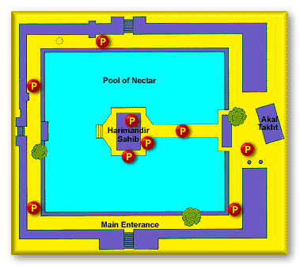

According to the Sikh historical records, the land that became Amritsar and houses the Harimandir Sahib was chosen by Guru Amar Das, the third Guru of the Sikh tradition. It was then called Guru Da Chakk, after he had asked his disciple Ram Das to find land to start a new town with a man-made pool as its central point.[6][7][22] After Guru Ram Das succeeded Guru Amar Das in 1574, and in the face of hostile opposition from the sons of Guru Amar Das,[23] Guru Ram Das founded the town that came to be known as "Ramdaspur". He started by completing the pool with the help of Baba Buddha (not to be confused with the Buddha of Buddhism). Guru Ram Das built his new official centre and home next to it. He invited merchants and artisans from other parts of India to settle in the new town with him.[22]
A Sikh Guru (perhaps Guru Arjan) seated in the Golden Temple at Amritsar in the late 16th or early 17th century, circa 1830 Guler painting
Ramdaspur town expanded during the time of Guru Arjan financed by donations and constructed by voluntary work. The town grew to become the city of Amritsar, and the area grew into the temple complex).[24] The construction activity between 1574 and 1604 is described in Mahima Prakash Vartak, a semi-historical Sikh hagiography text likely composed in 1741, and the earliest known document dealing with the lives of all the ten Gurus.[25] Guru Arjan installed the scripture of Sikhism inside the new gurdwara in 1604.[24] Continuing the efforts of Guru Ram Das, Guru Arjan established Amritsar as a primary Sikh pilgrimage destination. He wrote a voluminous amount of Sikh scripture including the popular Sukhmani Sahib.
ARCHITECTURE

The Golden Temple stands in the midst of a beautiful water body called Amritsar or Amrit Sarovar, from where the city derives its name. The shrine displays influences of different architectural styles, including the Indo-Islamic Mughal architecture and the Hindu Rajput architecture. It is a two-storied structure. While the lower level of the shrine is built out of marble, the upper level is covered in gold panels. A 750 kg gold gilded dome sits at the top of this structure. Even the doors of the shrine are covered in gold foil.
The interiors of the shrine are adorned with splendid floral motifs and frescos. Verses from the scripture of the Sikhs are etched in gold lettering on the arches of the shrine. There are four entrances to the Golden Temple complex, but only one to enter the gurudwara.
The gurudwara is comprised of many buildings which are located around the main sanctum and the water body. Of these, the most important is Akal Takht or one of the five seats of power in Sikhism. You can also see a clock tower, a museum, offices, and a community kitchen which is locally called a langar.
PHILOSOPHY
The Golden Temple or "Darbar Sahib" at Amritsar is the most sacred place for the Sikhs. The Golden temple symbolizes the magnificence of the Sikhs all over the world. The Golden Temple also known as Harmandir Sahib is an example of the spirit of tolerance and acceptance that the Sikh philosophy propounds. In the architecture of the Golden temple are included symbols associated with places of worship of other religions. The Sikhs and people of other religions pay visit to Amritsar and to pay obeisance at Sri Harmandir Sahib.
Guru Arjan Singh got the foundation of the Golden temple laid by a Sufi saint Mian Mir of Lahore in December, 1588. The construction work was directly supervised by Guru Arjan Sahib himself. Sri Harmandir Sahib is built on a 67ft. square platform in the centre of a Sarovar (tank). The Golden temple has entrance from all the four sides and is accessible to every person without any distinction of Caste, creed, sex and religion. There is a 13 ft circumambulatory path around the main shrine. It was mainly in the nineteenth century, during the reign of Maharaja Ranjit Singh, that the people lavished their wealth on the Golden temple.
The Guru Granth Sahib, the holy book of the Sikhs, was installed in the Harmandir Sahib in 1604. The location of the Granth Sahib here, adds to the sanctity and veneration of the Harmandir Sahib. Here lies the spirit and soul of Sikhism. This symbol of abiding faith and tolerance is held in high esteem by every Sikh. The Golden temple is the place which every Sikh dreams of visiting. Golden Temple tour is a must for the Sikhs coming to India.
SPIRITUALITY
Sri Harmandir Sahib, also known as the “Golden Temple”, is a beautiful holy shrine located in Amritsar, Punjab, India. Furthermore, it is the holiest shrine in Sikhism and as such many Sikhs visit it on a daily basis. It is a major destination for Sikhs besides being a popular tourist attraction. It’s open to all religions. Visitors, male or female, must cover their heads before entering the temple premises. Moreover, the Guru Granth Sahib is in the Temple during the day, while at night, it is in the Akal Takht or Eternal Throne.
The most famous and attractive aspect of the Golden temple is its glittering golden dome and appearance. Furthermore, the temple is built on marble that is 67-ft square. Moreover, the temple is a two-storey structure. Maharaja Ranjit Singh is responsible for the building of the upper half of the building with a gold leaf that is approximately 400 kg.
Moreover, there are a number of famous temples surrounding the Golden Temple. Also, the construction of the pool, whose name is Amritsar or Amrit Sarovar, here was by the fourth Guru of Sikhs, Guru Ram Das. The brilliant architecture of the temple gives it a unique look. Furthermore, the surrounding Amrit Sarovar pool enhances the beauty of the shrine.
During the night time, the golden reflection of the temple in the pool is really a sight to behold. To the south of the temple is a beautiful garden where one can easily attain peace of mind. The Central Sikh Museum, which is atop the Clock Tower, adds to the charm of the temple’s surroundings.
Golden Temple is one of the holiest religious sites of the Sikh community. Furthermore, this beautiful shrine, besides being a symbol of the Sikh religion, is also the pride of India.
COST
The Golden Temple that you see today interestingly wasn’t covered with an inch of gold when it was first constructed. In the year 1762, this religious heritage site was complete, destroyed by Islamic rulers. It was then that Maharaja Ranjit Singh, a brave Sikh ruler rebuilt the entire temple and added a sparkling outer covering of gold to the marble structure. 500 kg of pure 24-karat of gold worth ₹130 crores, covered the temple in all its glory. And that’s when the Sri Harmandir Sahib got famously referred to as the Golden Temple of Amritsar.